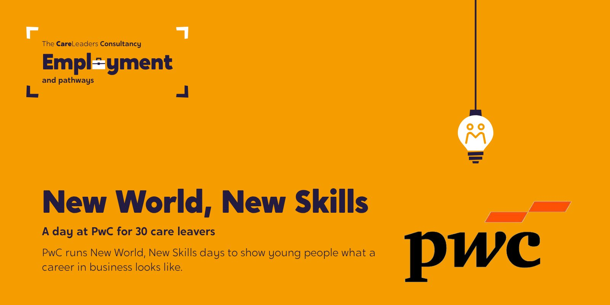
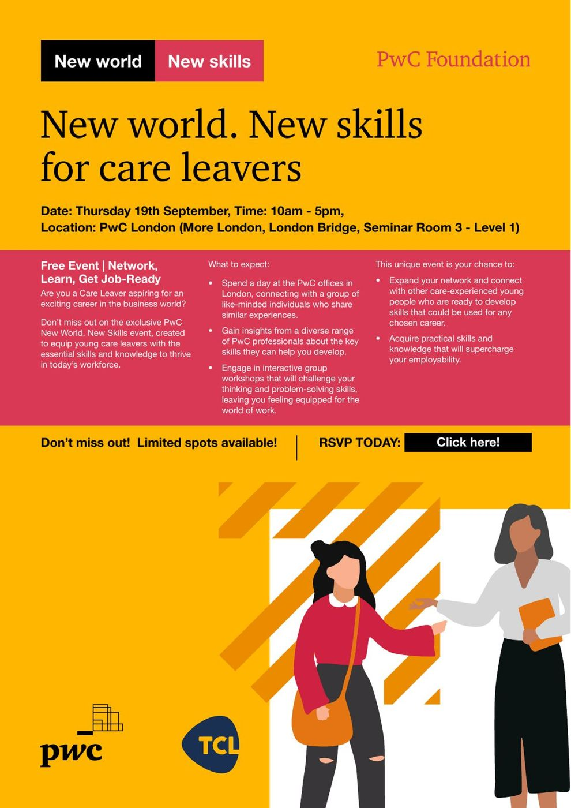

yment
yment
The starting point
PwC already ran New World, New Skills days for school students: talks from PwC staff, a tour of the offices and a team challenge, with travel and lunch paid. When we met PwC’s community team in October 2023, we asked what it would take to open the same day to care leavers. PwC had the building, the people and the programme. We had the relationships with councils and young people that get the right people into the room.
What we heard
In October 2024 we sat down with PwC to go through the day. PwC said the mix of young people from different councils made for a good atmosphere, and that the team challenges drew out real ideas and passion. Young people gave plenty of good feedback out loud at the close, and PwC collected written feedback forms after the day. Our own review was frank about what to change next time: involve young people in designing the day from the start, make sure staff across the building know what the day is for, and give clear next steps afterwards.
What we did
- October 2023AgreeA 2024 programme with the PwC Foundation: bring around 30 care leavers to New World, New Skills
- 2024Recruit11 local authorities contacted, six interested; we ran invitations, promotion and RSVPs
- 19 September 2024The dayA tour of More London, VR headsets, time with PwC staff, team challenges, and Luke’s story
- October 2024ReviewWhat worked, what to change and what could come next
How we worked
Their building, our networks
PwC brought the offices, the professionals and the programme. We brought the councils and the young people.
Staff came too
Council staff came with the young people they support, so the day carried on after they left the building.
Lived and professional experience
Luke spoke as someone with experience of care who now leads The Care Leaders, after the speaker who opened the day set the tone.
The format was PwC’s own. What we added was the route in: invitations through the councils’ own teams, and staff on the day who knew the young people.
What changed
The day met its aim: 30 care leavers, from four councils, the number PwC and we set out to reach. In the debrief we put ideas on the table for what could come next: training for PwC staff on supporting care leavers, management training, a take-over day with senior leaders, and pointing young people to PwC’s talent network and virtual insight programme. We have no record that these went ahead.
See the work
What we made, and what it looked like.
The day
New World, New Skills: a day at PwC’s London office for 30 care leavers from four councils.
The flyer
Co-branded with PwC, sent through our networks of personal advisers.
